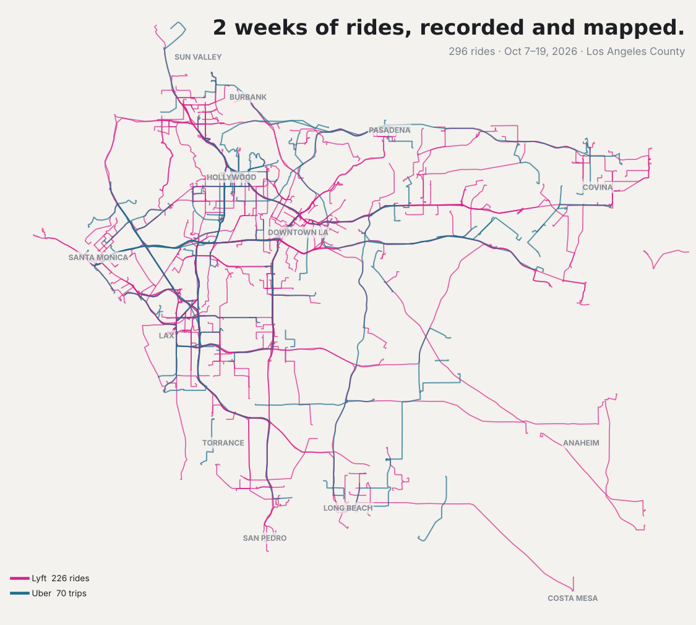

Two weeks of driving for Lyft and Uber across Los Angeles, October 7–19, 2026: 296 rides, 2,015 paid miles, $4,088.21 gross. Everything here comes from the driver's own exports, a phone GPS trail, the earnings sheet and the Prop 22 statements, reconciled against each other and, where the trail went dark, filled in from road routing and memory.
Every ride drawn on the roads it took: 229 from GPS traces, 61 road-routed from their endpoints, 6 traces with gaps filled, and 7 drawn from the driver's recollection. Filter by day or platform, toggle deadhead legs, accept-to-pickup legs and pickup clusters.
Open the map →Where $4,088.21 came from: ride pay split into base, tips, bonuses and promotions per platform, the two Prop 22 guarantee top-ups, charging costs, the day-by-day totals and the biggest fares.
See the money →The driver's own earnings sheet, one card per day: Lyft and Uber dollars, tips, booked hours and miles, odometer miles, charging, the running total against the $2,400 floor and the $3,000 and $4,000 goals, and the rides behind each day.
Walk the twelve days →What the geography says: 17 Lyft pickup clusters against 2 for Uber, 18.6% empty miles on Lyft versus 37.8% on Uber, the 7-minute median drive to each pickup, LAX as a destination rather than an origin, and the hours that paid.
Read the patterns →Sixteen questions put to the data after the map was built: what leaving LAX really costs and whether the airport run is still worth it, where 8.5 hours of Lyft's booked time went, what Uber keeps of the rider's price, who tips and when, which empty miles were avoidable, and which of all this is the driver rather than the market.
Read the answers →The six source files, how each ride's line was produced, the accept-time correction, the thirteen mismatched traces, the Oct 19 GPS blackout, the seven recalled routes, and the open questions.
How it was built →